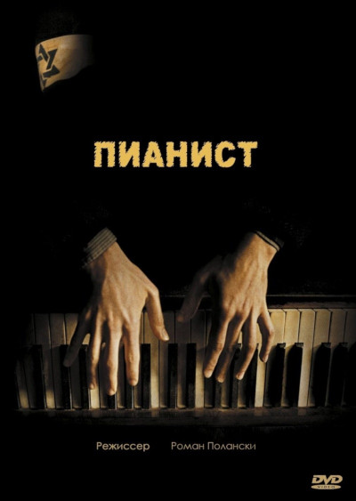

Топ 5 смешных фактов
- Ношение галстука понижает поток крови к мозгу на 7,5 процентов.
- Боязнь длинных слов называется
Гиппопотомонстросесквипедалиофобия.
- Кометы пахнут гнилыми яйцами.
- Глухие могут использовать язык жестов во сне.
- Кометы пахнут гнилыми яйцами.
Обзор на Подземелье Вкусностей
 Команда разношёрстных (и голодных) приключенцев спускается в пещеры,
чтобы вызволить из драконьего живота пожертвовавшую собой сестру одного из главных героев.
Участь незавидная, но её всё ещё можно спасти!
Звучит как плюс-минус стандартная затравка для фэнтезийного аниме,
но в
Команда разношёрстных (и голодных) приключенцев спускается в пещеры,
чтобы вызволить из драконьего живота пожертвовавшую собой сестру одного из главных героев.
Участь незавидная, но её всё ещё можно спасти!
Звучит как плюс-минус стандартная затравка для фэнтезийного аниме,
но в Подземелье вкусностей
всё куда интереснее, чем может показаться на первый взгляд.
Подземелье тут — не просто пещеры с нежитью и сокровищами,
а комплексная многоуровневая экосистема со своими правилами и живностью;
монстры — не столько препятствия на пути в зловещие глубины, сколько изысканные блюда высокой кухни!
Цитаты из фильма Пианист

Мы покорны как овцы по дороге на бойню.
Из музыкантов не выходят подпольщики.
Историческая неизбежность в действии. Я всегда говорю: ищи светлую сторону.
Расписание матчей
| Дата | Время | Турнир | Соперник | Счёт |
|---|---|---|---|
| Англия. Примьер-лига | Кристал Пэлас | 0:2 | |
| Англия. Кубок | Лестер | 2:1 | |
| Англия. Примьер-лига | Тоттенхэм | 1:0 | |
| Англия. Примьер-лига | Эвертон | Не начался | |
| Англия. Примьер-лига | Ипсвич | Не начался | |
| Англия. Кубок | Фулхэм | Не начался | |
| Англия. Примьер-лига | Арсенал | Не начался | |
| Англия. Примьер-лига | Лестер | Не начался |